git代码版本控制软件
为什么要使用代码版本控制软件
作用：
- 团队协作开发：多个人员开发不同的模块，最终要合并代码。
- 版本回退（可追溯）：可让项目回到指定的版本，即后悔药。
- 代码备份：电脑系统奔溃，没事，只要代码提交到仓库中，可在拉取下来。
常见的代码版本控制软件有csv、svn、git （功能非常强大）
git工具介绍
git是一个开源的代码版本控制系统，可以有效、高速地处理项目版本管理。
git发明者：是Linux创始人林纳斯 ，最开始是用于管理Linux内核源码的。
git是C/S架构的软件
- C: client客户端，自己需要安装
- S: server服务端，可以自己搭建git服务器，或使用第三方的如github或码云仓库。有些企业也会搭建自己私有的代码托管服务器。
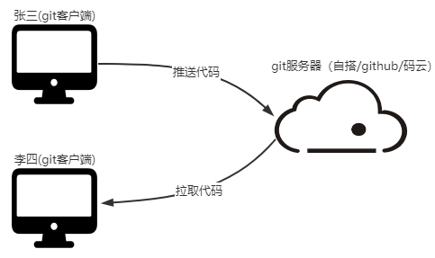
github、码云是免费的第三方代码托管平台
安装git客户端工具
安装时候，注意自己系统的位数。64还是32位
下载地址：https://git-scm.com/download/win
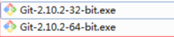 安装的时候选择安装路径即可，然后一路next即可。安装好后创建文件夹，进去鼠标右键会多出以下两个选项，代表git工具安装完成。
全局设置用户名和邮箱
全局设置：先要设置提交的用户名和邮箱，不设置则无法提交代码。
git config --global user.name 名字 #叫啥名字
git config --global user.email 邮箱 #怎么联系你
去掉--global则只在当前项目中有效，让每个项目有不同的名字
git config user.name 名字 #叫啥名字
git config user.email 邮箱 #怎么联系你
查看配置信息
git config --list
结果：
user.name=你上面设置的用户名
user.email=你上面设置的邮箱
创建git仓库
仓库git仓库有两种方式：
- 在本地文件夹中执行
git init指令，会将当前文件夹初始化为一个git仓库。 - 也可从远程服务器（github、码云）创建一个仓库，然后再执行
git clone克隆到本地
这里我们先使用方式1来创建仓库：
从本地文件夹创建一个git仓库，步骤如下：
- 创建一个空文件夹：如
shop - 进行
shop文件夹中，点击空白处，鼠标右键选择Git base here， 输入git init指令，此时目录会生成一个.git的目录。那么git库就创建成功了。
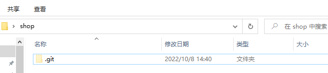
由于.git,是隐藏目录，默认不显示出来，找到文件夹上方的 查看->隐藏的项目，将其勾选即可查看。
注：不要去改.git目录中的任何文件，否则会破坏git仓库。
git工作流
工作区：我们的工作目录。
版本库：存储仓库代码的地方。存在于.git目录
- 暂存区：英文名叫stage或Index,存在于
.git目录中的index文件中 - 本地仓库：代码实际存储的地方。且默认会有个master 分支， 其中HEAD 指针是指向当前所在的分支。
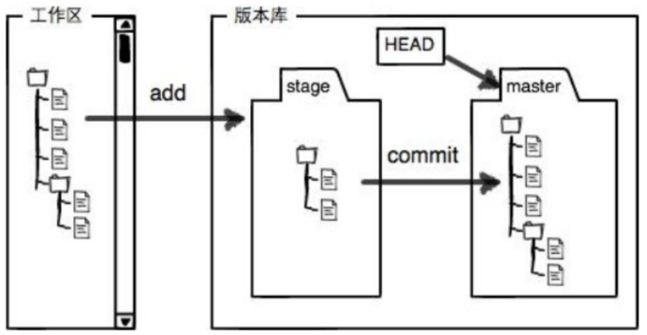
git常用指令

查看命令如何使用，输入：git commit --help 或 git commit -h
git使用文档：https://git-scm.com/book/zh/v2
git add
默认在工作区创建的文件是属于未跟踪（Untracked files:）的，需要执行add指令将其添加到暂存区。
add指令作用：添加当前工作目录中的文件添到暂存区中:
git add . #添加当前工作目录中的所有文件到暂存区
git add filename #添加当前工作目录中指定文件到暂存区:
git status
作用：查看暂存区状态文件的状态。是新增、删除、还是修改状态。
git status
清屏命令：clear。或快捷键ctrl + L
git commit
作用：把暂存区中的文件提交到本地仓库中
git commit -m '备注信息'
对于之前已经提交过本地仓库中的文件，再次提交时，中间可以省略add指令
git commit -am '备注信息' #add和commit连写
git log
作用：查看提交的日志信息
git log
或
git log --oneline
更酷的图形化显示方式（含分支的信息）：
git log --oneline --graph
操作如下：
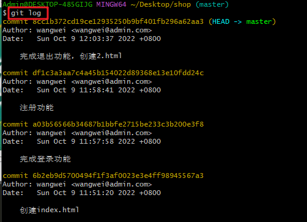
使用git log查看日志时，命令行最后一行会有：号，后面输入q即可退出日志的查看。如果不小心按住了键，则重新输入:q 即可。
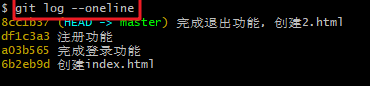
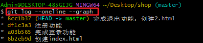
git alias
git alias： 设置命令的别名。
若git带有较多参数的时候，可以使用alias别名的操作简化
git config --global alias.别名 "命令全称"
如给log命令设置别名为lg:
git config --global alias.lg "log --graph --pretty=format:'%Cred%h%Creset -%C(yellow)%d%Creset %s %Cgreen(%cr)%Creset' --abbrev-commit --date=relative"
可查看提交的信息、日期时间、附注信息、作者
效果如下： 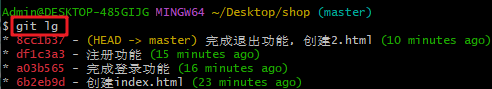
git rm 删除文件
git rm filename # 删除某个文件（只能删除已经被跟踪的文件）
git checkout . # 撤销所有的操作(文件的修改操作)
git log和git reflog的区别
- git log：显示本地仓库中提交的日志信息。。
- git reflog：显示所有操作过的记录，含回退日志的记录。 比git log更详细。
git reset 版本回退
reset作用：实现提交后版本回退
使用git relog 获取版本日志的前7位,可以回到指定的版本
git reset --hard af4542g
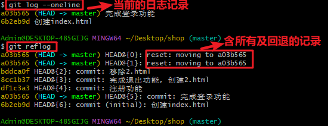
HEAD是指向前当前分支中最后一次提交的引用。
git push推送远程仓库
git push作用：用于将本地仓库代码推送到远程仓库。
之前的提交都将代码提交到本地仓库，而需要把代码分享给另外一个协同者，需要推送到远程仓库。
将本地仓库与远程仓库地址进行关联：
git remote -v #查看本地的远程仓库地址
git remote rm origin #移除本地远程仓库地址
git remote add origin 仓库地址 #设置本地的远程仓库地址，其中origin是远程服务器名称，也可以改名
推送代码：
git push -u 远程名称 本地分支名:远程分支名
如：将本地的master分支推送到origin主机的master分支，命令可以这么写：
git push -u origin master:master
# 本地与远程分支一样简写
git push -u origin master
如果当前分支与多个远程主机存在追踪关系,一般下情况下，第一次推送加-u，可记住远程主机名，后面在推送可以省略。
不带任何参数的git push，默认只推送当前分支，
git push
push 推送时候会要求你输入用户名和密码，你也可以选择记住密码，后面就无须输入
github中创建仓库&克隆
github创建仓库
创建仓库比较简单，参考下面的图片即可： 1、点击加号+，选择New repository新建仓库 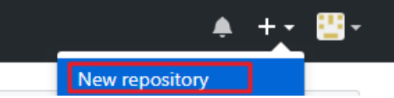 2、输入仓库的信息
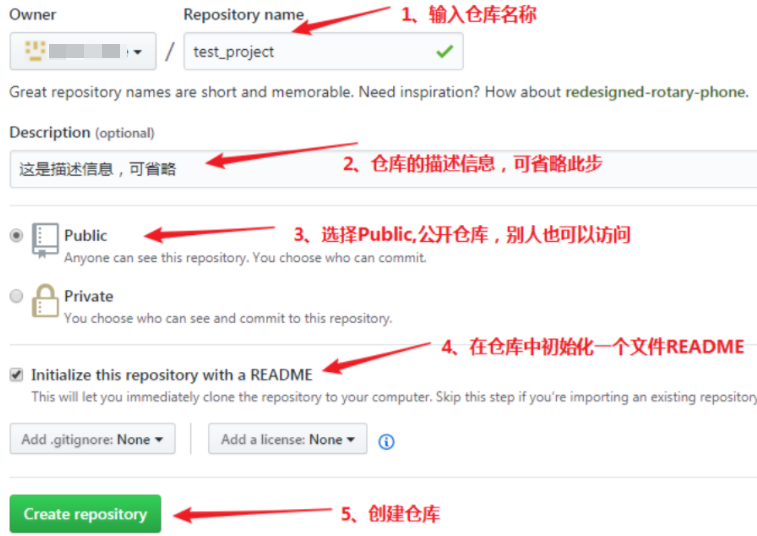
注意：若导入一个本地已经存在的仓库（之前git init 创建过），则不需要勾选以下复选框。
勾选了那么就是两个不相关的仓库了，后面还需要强制关联起来，比较繁琐！ 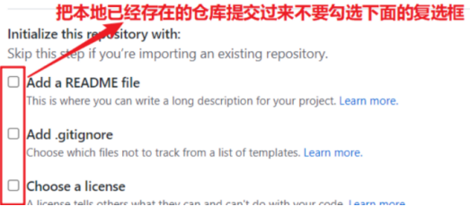
克隆远程仓库代码
克隆远程的仓库代码到指定目录:
git clone url [本地目录]
注意：不写本地目录名称默认会在当前目录创建一个与远程仓库同名的目录
也可以仓库源码克隆到一个指定的目录如： myshop目录
git clone url myshop
解决端口 OpenSSL SSL_read 或 443 等网络相关错误
如果遇到以下问题：
Failed to connect to github.com port 443:connection timed out
或
OpenSSL SSL_read: Connection was reset, errno 10054
解决办法取消代理即可：
方式1：多试几遍
方式2：取消代理，如下
git config --global --unset http.proxy git config --global --unset https.proxy
拉取代码
git pull作用：拉取远程仓库中的代码到本地仓库中。
git pull 远程主机名 远程分支:本地分支
注意，分支push推送顺序的写法是
<本地分支>:<远程分支>，而pull拉取是<远程分支>:<本地分支>，他们是相反的
拉取和获取的区别：
git pull （拉取）= git fetch +git merge git fetch（获取） = 拉取之后还要手动合并 git merge origin/master
git pull origin master # 拉取 远程仓库代码并合并到本地master分支
git fetch origin master # 获取 远程仓库代码不会合并，需要执行 git merge 进行合并
特殊情况（及其罕见）：当远程和本地两个仓库不相关时，可以强制合并到本地：
git pull origin master --allow-unrelated-histories
解决开发中冲突问题
如果多人开发同一个模块，难免会修改同一个文件相同行代码！后者推送代码时候，则会提示有文件冲突（conflict）！导致推送失败！
命令行终端会提示： ! [rejected] ，意思是拒绝。
解决办法：先拉取最新代码，和同事商量怎么解决，修复之后然后再次重新推送！
拉取下来的时候，千万不要直接删除别人的代码！！！一定要沟通！！
创建.gitignore忽略文件
有些文件或目录如果我们只是在项目本地用到，或者这些文件/目录是自动生成的，并不想上传到远程仓库，
我们可以在仓库目录中创建.gitignore文件，进行忽略规则的编写。
作用：用于忽略某个文件或目录
必须.git隐藏文件夹在同一目录
示例：创建.gitignore文件，忽略node_modules和dist目录，忽略.DS_Store文件，此文件是苹果mac电脑自动生成的。没啥用
node_modules
dist
.DS_Store
查看各语言忽略文件的参考：https://github.com/github/gitignore
项目说明文档
作用：让别人拿到你的项目通过README.md文件的描述快速的了解该项目，相当于项目的使用说明文档。
创建在仓库跟目录中，和.git同级目录
commit提交日志规范
Commit message格式：
<type>: <subject>
git commit -m 'feat: 登录功能'
git commit -m 'fix: 修复上传文件相关漏洞'
注意冒号后面有空格。
type：用于说明 commit 的类别，只允许使用下面7个标识。 subject：是 commit 目的的简短描述，不超过50个字符，且结尾不加句号（.）。 提交类型type有如下常见的值：
- feat：新功能（feature）
- fix：修补bug
- docs：文档（documentation）
- style： 格式（不影响代码运行的变动）
- refactor：重构（即不是新增功能，也不是修改bug的代码变动）
- test：增加测试
- chore：构建过程或辅助工具的变动
创建标签（版本号）
Git 可以给仓库历史中的某一个提交打上标签，以示重要。 一般我们会使用这个功能来标记发布的代码版本（ v1.0.0 、 v2.0.0 等等）
查看仓库已有的标签
git tag
创建标签
git tag v1.0.0 -m '完成注册' -m '完成订单'
-m选项指定了一条将会存储在标签中的信息。 如果没有指定一条信息，Git 会启动编辑器要求你输入信息
默认情况下，git push 命令并不会传送标签到远程仓库服务器上。 在创建完标签后你必须显式地推送标签到共享服务器上。
git push origin v1.0.0
推送本地的所有标签到远程仓库
git push origin --tags
要删除掉你本地仓库上的标签
git tag -d v1.0.0
删除远程标签
git push origin --delete v1.0.0
git分支操作
为什么需要分支
分支的优点：
- 意味着程序员能把自己的工作从开发主线上剥离出来，开发自己分支的时候不会影响主线分支(master)的运行,更加高效。
- 如果有一条分支开发失败了，也不影响主分支的运行。尤其是在加特定需求的时候特别有用。
- 当发现线上运行的项目有bug时，只需要在开一个分支进行修复，最后再合并到主线分支即可
- ....
常见的分支使用策略：
master分支：
- master分支：这是每个仓库默认都有的分支，一般叫主分支。主要用来发布代码正式版本的,master一般是可以直接发布在生产环境中，master 分支要确保稳定性。
- 正常开发下，是不可以在master下直接写代码的
dev开发分支：
- dev为开发分支：从master分支中分出来的，后续开发人员主要在此分支下进行开发。
- 开发完成后，最终都要dev分支代码合并到master主分支。
feature功能分支：
- 为了开发某种特定功能，从develop分支上面分出来的功能分支的名字
- 可以采用feature-* (分支功能/分支名)的形式命名。如支付功能分支： feature-pay
修补bug分支 (fixbug)：
- 软件正式发布以后，难免会出现bug。这时就需要创建一个分支，进行bug修补。修补bug分支是从master分支上面分出来的。修补结束以后，再合并进master和dev分支
- 它的命名，可以采用fixbug-*的形式。如修复支付功能：fixbug-pay
分支相关操作
- 查看仓库所有的分支:
git branch
- 创建dev分支，并切换到dev
git branch dev
git checkout dev
或简写
git checkout -b dev
- 删除分支dev:
git branch -d dev
- 强制删除:
git branch -D dev
- 推送dev分支到远程仓库
git push origin dev
- 删除远程的dev分支
git push origin --delete dev
合并分支代码。如将dev分支合并到master主分支。
步骤：1 先切换到要合并的分支，2. 再把dev分支合并到当前分支
git checkout master
git merge --no-f dev -m '合并的信息'
注：通过添加选项--no-f，也合并也算一次提交，这样可以让分支线更加清晰。
合并的时候可能会发生冲突，需要先解决冲突在操作。
merge合并分支代码
合并指定branch分支到当前分支
git merge --no-f <branch> -m '日志信息'
如图： 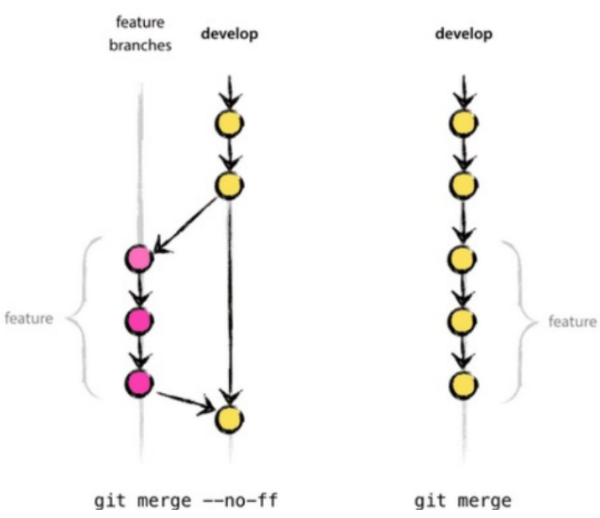
- git merge --no-f dev 可以保存你之前的分支历史。能够更好的查看 merge历史，以及branch 状态。
获取远程分支代码
分两种情况：
第一种情况：若远程仓库已存在本地，则直接pull拉取即可。
git pull origin dev # 拉取远程dev分支合并到本地 git checkout dev # 可以切换到远程dev分支中继续开发工作第二种情况，本地没有远程仓库，则先克隆，在pull拉取。 克隆的仓库默认仅有master分支
git clone 仓库地址
git pull origin dev # 拉取远程（origin）中的dev分支
git checkout dev # 可以切换到远程dev分支中继续开发工作
设置ssh协议免密提交
ssh是一种客户端和服务器之间的安全连接协议。
仓库地址有两种协议：https、ssh。
如果仓库地址使用https的协议，每次提交都会要求输入远程仓库github的用户名和密码，
配置ssh协议可以免去每次推送代码输入密码的烦恼。
配置步骤：
- 电脑本地创建ssh公钥和私钥 ，ssh公钥上传到github或码云。
- 把仓库的地址协议改为ssh协议
1. 创建ssh私钥和公钥：
终端输入: ssh-keygen ，然后一路回车即可，成功之后会在当前用户的目录多出如下的两个文件。
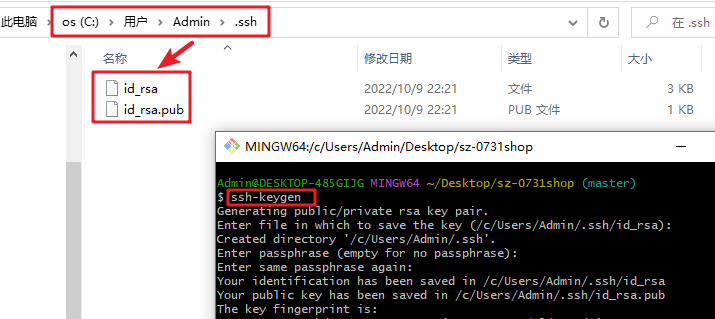
id.rsa:私钥文件
id_rsa.pub:公钥文件
公钥：理解为锁,上传到github中存放着。 私钥：理解为锁的钥匙，在本地电脑存放着。
也就是说只有锁的对应钥匙才可以进行提交代码。
把id_rsa.pub的公钥文件内容复制到github指定位置，步骤如下：
找到右上角用户头像下面的设置settings,在找到SSH一项，点击New SSH Key，把公钥输入文本框中即可：
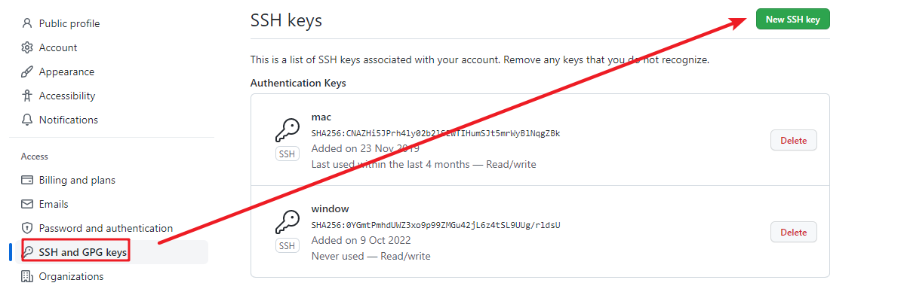
输入以下指令,查看是否配置成功：
ssh -T git@github.com
提示有 You've successfully authenticated,字样ssh配置成功。
上面配置好之后，修改代码，push推送测试下。
- 配置仓库地址为ssh地址协议
先删除原地址，在添加ssh协议地址
git remote rm origin
git remote add origin ssh地址
修改代码，测试推送！
github相关功能说明
fork克隆操作：可以把别人的项目fork（理解为复制）到自己的用户名下面
issue：给项目提问题建议，这样一个开源项目就会变得越来越完善健壮。
pull request: 。如果一个开源项目有bug，你可以帮他修复完善。就需要发一个pr请求。
发一个pr请求步骤：
fork下来 ，克隆到本地进行修改并提交。
点击pull request即可
项目原作者会收到pr请求，如果没问题，项目作者会把此请求合并merge合并到项目中。
合并成功之后，你就是这个开源项目的贡献者了！，面试时候是个亮点
github使用技巧分享
- github代码搜索技巧
如：github输入框中，找出点赞数超过100，且名字含有vue字样仓库的。
vue stars:>100
如：在后缀名为.js的文件，找出getBoundClientRect的使用。
这种特别是在查找api如何使用时特别有用。
getBoundClientRect filename:*.js
找使用用js写的放大镜相关的项目,
zoom language:js
找使用用js写的放大镜相关的项目,且仓库点赞数超过2000（2k）
zoom language:js stars:>2000
参考：https://github.com/search/advanced ： 表单可视化形式，可生成高级查询条件
2. 看仓库源代码技巧
进入github某个仓库，直接输入字符.即可打开在线版的vscode查看源码，非常方便。
前提要登录github